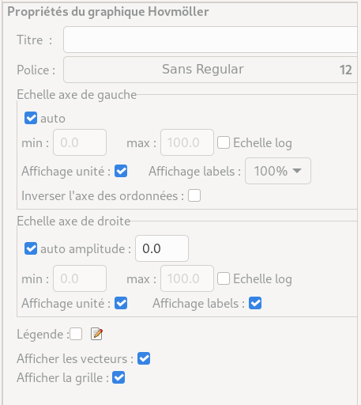

Configurer un graphique Hovmöller

Titre :
Titre qui apparaît en haut du graphique.
Noter la possibilité d'utiliser des macros dans le titre du graphique (voir info-bulle).
Police : Police du titre : une interface permet de configurer la police (fonte, taille).
Echelles : Le graphique Hovmöller permet de superposer des tracés de type ST. Le tracé de type Hovmöller est toujours associé à l'axe de gauche tandis que le ou les tracés de type ST sont associés à l'axe de droite. Pour la configuration de l'axe droit, se référer au paragraphe "Configurer un graphique ST".
Légende : Controle l'affichage de la légende sur le graphique (taille, position, contenu, cf § Configurer la légende).
Afficher les vecteurs : Affiche le nom des vecteurs aida visualisés verticalement à droite du graphique.
Afficher la grille : Affiche la grille des coordonnées pour une meilleure lecture du graphique.